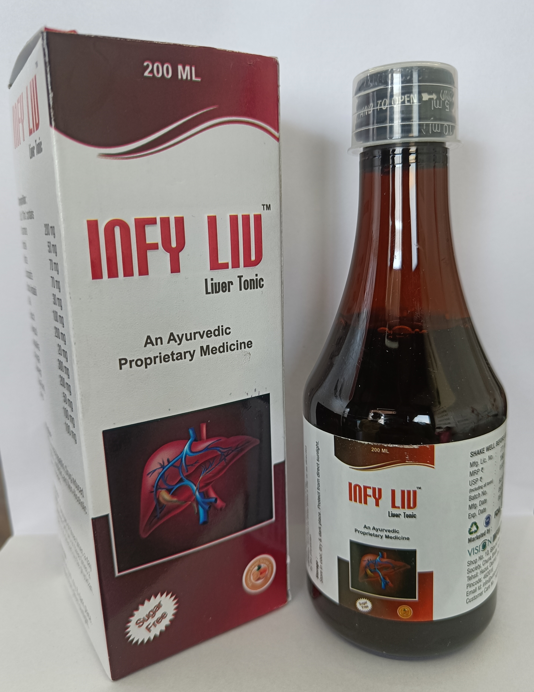

Infy Liv
Syrup
- Increases resistance to infection
- Stimulates, repairs and regenerates hepatocytes
- Improve the functional efficiency of the liver
- Promotes appetite and weight gain in patients
- Regulates levels of liver enzymes and antimizes assimilation
- Tone up metabolism
- Improves Appetite

Infy Tone
Syrup
- Helps to regulate the menstrual cycle
- Useful in bleeding disorders & inflammation of the uterus
- Improves blood circulation and nourishes skin.
FOJEERA
Syrup
- Sonth (Dried Ginger): Sonth is believed to aid digestion, reduce bloating, and alleviate gastrointestinal discomfort.
- Kalimirch (Black Pepper): Kalimirch is commonly used to improve digestion, stimulate appetite, and relieve gas and bloating.
- Makoy (Solanum nigrum): Makoy is traditionally used to support liver health and promote digestion.
- Kala Jeera (Black Cumin): Kala Jeera is known for its carminative properties, helping to relieve gas and improve digestion.
- Swet Jeera (Cumin): Swet Jeera, or white cumin, is often used to enhance digestion and alleviate digestive issues like bloating and flatulence.
- Ajwain (Carom Seeds): Ajwain is commonly used in Ayurveda to promote digestion, reduce gas, and relieve abdominal discomfort.
- Souf (Fennel Seeds): Souf, or fennel seeds, are known to have carminative properties and are often used to soothe digestive issues like bloating and indigestion.
- Hing (Asafoetida): Hing is believed to aid digestion, relieve gas, and reduce bloating. It is commonly used in Ayurvedic remedies for digestive problems.
- Nimbu Satva (Lemon Extract): Nimbu Satva, or lemon extract, is known for its digestive benefits and its ability to stimulate digestion.
- Shudhha Lavang (Cloves): Shudhha Lavang, or cloves, have been traditionally used to support digestion and relieve digestive discomfort.
- Khand (Rock Sugar): Khand, or rock sugar, is used as a sweetener in Ayurvedic preparations and provides energy.
- Pipal (Pippali): Pipal, or pippali, is known for its carminative properties and is used to support digestion and alleviate gas and bloating.
VIMKUL
Capsule
- Samir Pannas Ras: It is an Ayurvedic medicine that contains various herbal ingredients and minerals. It is primarily used for treating respiratory disorders and is believed to help in reducing cough, congestion, and breathing difficulties.
- Yogaraj Guggul: It is a classical Ayurvedic formulation that contains a blend of various herbs and minerals. It is commonly used for its anti-inflammatory properties and is believed to support joint health, reduce pain, and improve mobility.
- Mahavatvidhvasanna Ras: It is an Ayurvedic medicine that is traditionally used for managing vata dosha-related disorders. It is believed to provide relief from pain, stiffness, and inflammation in conditions such as arthritis and neurological disorders.
- Ashwagandha Ghan: Ashwagandha is a popular herb in Ayurvedic medicine known for its adaptogenic properties. It is believed to help manage stress, support the nervous system, boost energy levels, and enhance overall well-being.
- Dashmul Ghan: Dashmula is a combination of ten Ayurvedic herbs and is traditionally used to support the musculoskeletal system. It is believed to help relieve pain, inflammation, and stiffness in conditions such as arthritis and muscular disorders. 6. Lahsun Sudhha: Lahsun refers to garlic, which is used in Ayurveda for its numerous health benefits. It is believed to have antimicrobial, anti-inflammatory, and cardiovascular benefits.
VIMKUL
Liniment
- Mahanarayan Tel: This Ayurvedic oil is commonly used for joint and muscle pain relief. It may help reduce inflammation, improve blood circulation, and provide relaxation.
- Gandha Birouja Tel: Also known as Gandhapura oil or Indian Wintergreen oil, it is often used topically for its analgesic properties to relieve muscular and joint pain.
- Aung Tel: The specific benefits of "Aung Tel" are not clear from your description. It's possible that it refers to sesame oil (til tel), which is commonly used as a carrier oil in Ayurvedic formulations.
- Dalchini Ka Tel: Dalchini is cinnamon, and its oil is known for its warming properties. It may help improve blood circulation and provide a warming sensation when applied topically.
- Yograj Guggul: Yograj Guggul is an Ayurvedic herbal formulation traditionally used for joint pain, arthritis, and inflammation. It contains a combination of various herbs that may support joint health.
- Jayphal Tel: Jayphal is nutmeg, and its oil is often used for its analgesic and anti-inflammatory properties. It may help relieve pain and reduce swelling when applied topically.
- Erandbeej Tel: Erandbeej oil is derived from castor seeds and is commonly used as a carrier oil. It has moisturizing properties and can be beneficial for dry and rough skin.
- Nilgiri Tel: Nilgiri oil, also known as eucalyptus oil, is known for its cooling and soothing properties. It may help relieve respiratory congestion and muscle aches.
- Wintergreen Oil: Wintergreen oil (Gandhapura oil) is primarily used for its analgesic properties and is often included in topical formulations for joint and muscle pain relief.
- Karpur: Karpur refers to camphor, which has a cooling effect and is commonly used for its pain-relieving properties. It may help alleviate muscle soreness and provide a soothing sensation.
- Pudina Phool: Pudina phool is dried mint flower, and its oil is known for its cooling and refreshing properties. It may provide a soothing effect when applied topically.
- Ajwain Phool: Ajwain phool is carom seeds, and its oil is often used for its antiseptic properties. It may help relieve pain.